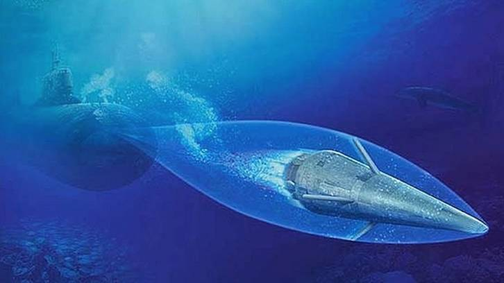
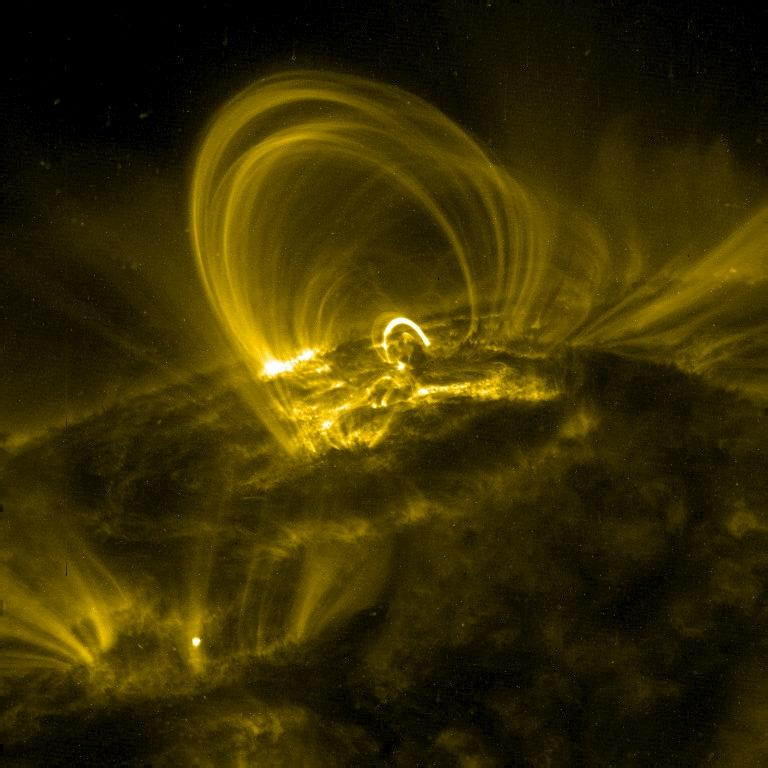

Fatos sobre o Stomatopoda
Odontodactylus scyllarus
| Reino | Filo | Subfilo | Classe | Subclasse | Ordem |
| Animalia | Arthropoda | Crustacea | Malacostraca | Hoplocarida | Stomatopoda |
Tem 16 cones receptores de cor.
Nós humanos temos apenas 3 cones receptores de cor o verde, o azul e o vermelho e tudo o que vemos são misturas dessas 3 cores.
Já o Stomatopoda tem 16 cones receptores de cor e consegue ver as três cores que nós tem conseguimos ver e mais 13 outras que são inconcebíveis para nós meros mortais.

Pequenas garras na velocidade de um tiro.
O Stomatopoda tem duas garras predatórias na parte da frente de seu corpo que aceleram na mesma velocidade de um tiro de uma arma calibri 22 e em menos de 3 milésimos de segundo atinge a presa com uma força de 1500N.

Onda de choque aquática.
Suas garras se movem tão rápido que a água envolta delas ferve em um processo conhecido como supercavitação
Quando essas bolhas de cavitação colapsam, elas produzam uma onda de choque subaquática que mata a presa até se ela não for atingida pelas garras.
Explosões de Luz
A força das bolhas de sua onda de choque também produzem temperaturas altíssimas que emitem pequenas explosões de luz. esse efeito é chamado de sonoliminescência.
